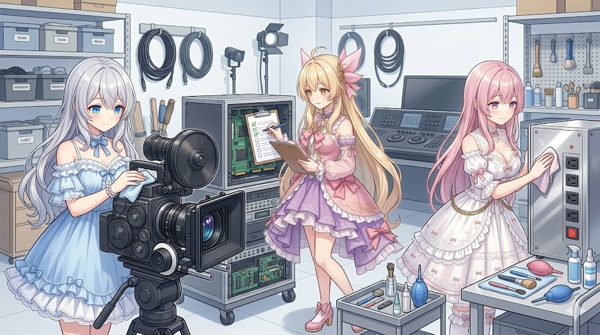

今日は新しいことに挑戦……ではなくて、いつもの動画づくりの「見えないところ」をていねいにお片づけした一日でした🌸 はなやかさはないけれど、こういう日が実はいちばん大事なんです。
ルピナス （ふつう）
今日は『画面には映らないけど、ちゃんとしてないと気になっちゃう』ところをまとめて整えたの。
アイリス （びっくり）
映らないなら直さなくてよくない？だれも見てないじゃん！
フィオナ （ふつう）
ふふ、映っていないところほど『なんだか変だな』が伝わってしまうんですよ。お部屋の隅っこのほこりみたいなものです。

🎵 音まわりをそうっと整えました
動画は、お喋りの声・効果音・BGMが重なってできています。今日はその音のバランスが、ほんのちょっとだけズレていたのを直しました。聴いていて「あれ？」とならないように、耳でなんども聴き比べながらの作業です。
アイリス （笑顔）
聴き比べ！あたし得意！ピッてやってシャッてするやつでしょ！
ルピナス （呆れ）
……それは何の音なの。
フィオナ （大笑い）
でも、耳で何度も聴き比べるのは本当に大切なんですよ。
🧹 使わなくなった道具は“屋根裏”へ
昔つかっていた古い道具やメモが、作業場のあちこちに残っていたので、思いきって「屋根裏」みたいな場所にまとめてしまいました。捨てるんじゃなくて、しまっておく。あとで「あれ、もう一回ほしいな」ってなることがあるので🌙
アイリス （衝撃）
捨てちゃダメなの！？いらないんでしょ！？
フィオナ （ウインク）
『いつか、また』があるんです。だからお片づけは、捨てるより“しまう”が安心なんですよ。
🏠 みんなまとめて、おうち総点検
立ち絵の位置、声のタイミング、背景の切りかわり、タイトル文字……ぜんぶ「いっしょに動く仲間」なので、今日はまとめて整えました。バラバラに直すより、いっぺんに見直したほうがきれいに揃うんです。
ルピナス （笑顔）
派手な新しい機能はゼロ。でも、土台がしっかりした気持ちのいい一日だったわ。
アイリス （笑顔）
地味えらい日！
フィオナ （ウインク）
配信の最新情報は X（https://x.com/irisfionaAIBS）でお知らせしています。今日も読んでくださってありがとうございました🌸